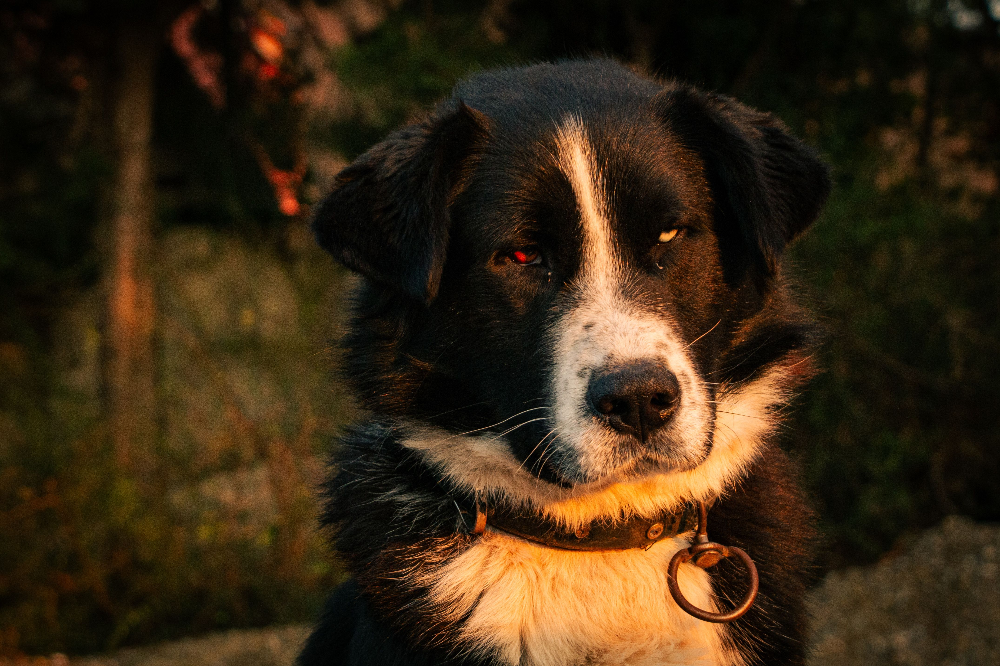
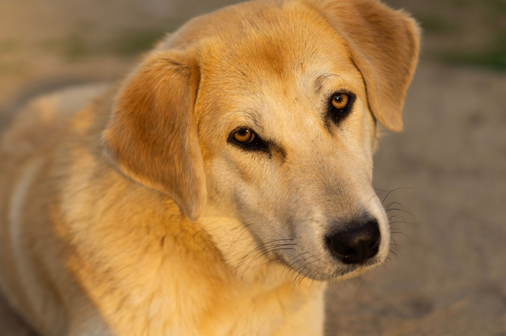
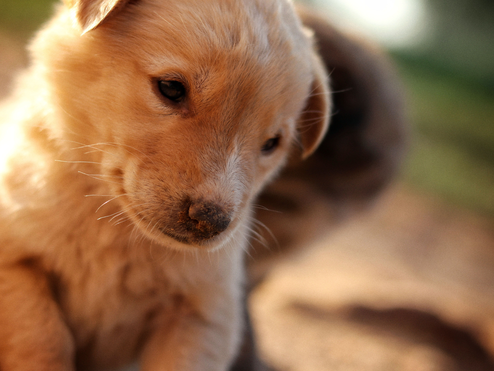
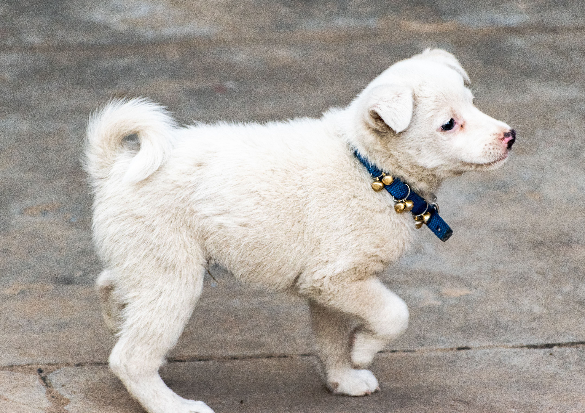
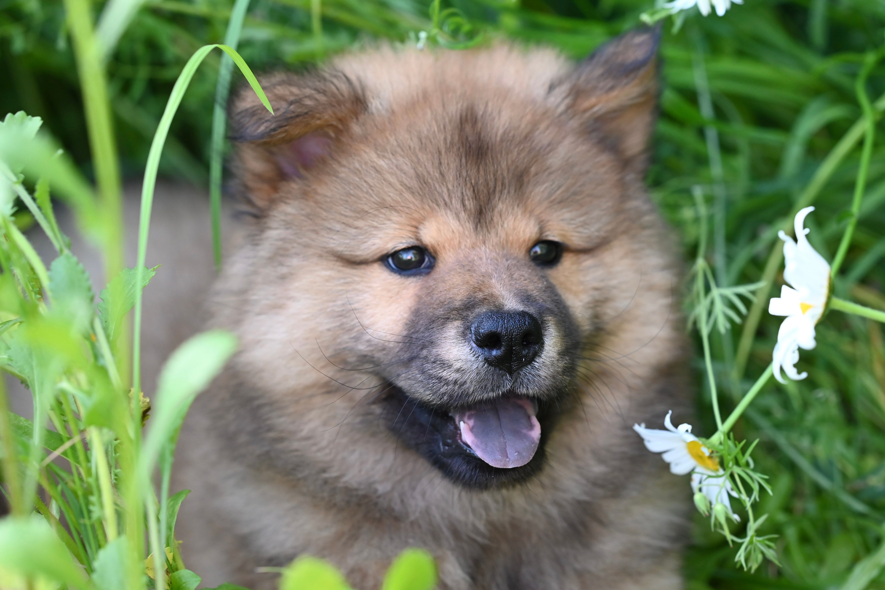
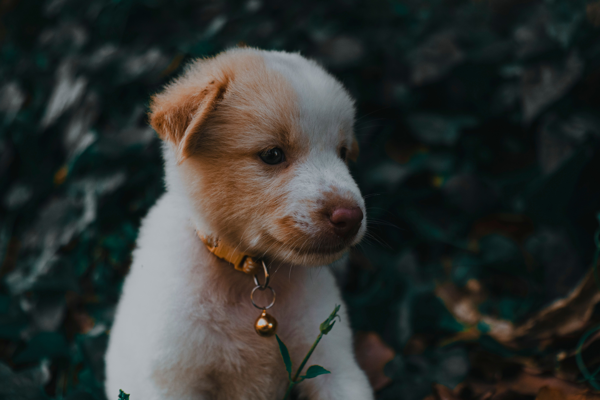

Sobre cães
Os cães (Canis lupus familiaris) são mamíferos carnívoriis da família dos canídeos, descendentes de ancestrais selvagens e considerados um dos primeiros animais domesticados pelos seres humanos.
Os pet shops desempenham um papel fundamental na rotina das famílias contemporâneas, funcionando como um centro integrado de cuidados que vai muito além da simples venda de produtos. Eles oferecem desde alimentos balanceados e medicamentos essenciais até serviços especializados de estética, como banho e tosa, que previnem doenças de pele e garantem o bem-estar físico dos animais de estimação. Para os tutores, esses espaços representam conveniência e segurança, concentrando em um só lugar tudo o que é necessário para a manutenção da saúde e da qualidade de vida de seus companheiros de quatro patas.
Além do suporte prático diário, o setor de pet shops reflete uma profunda transformação cultural na relação entre seres humanos e animais, impulsionada pelo fenômeno da humanização dos pets. Atualmente, os estabelecimentos se modernizaram para oferecer serviços altamente customizados, como creches para socialização, hotéis de luxo, terapias integrativas e alimentação natural sob medida. Esse mercado em expansão não apenas movimenta a economia com inovações constantes, mas também fortalece os laços afetivos, tratando os animais de estimação como membros legítimos do núcleo
Galeria de Fotos





